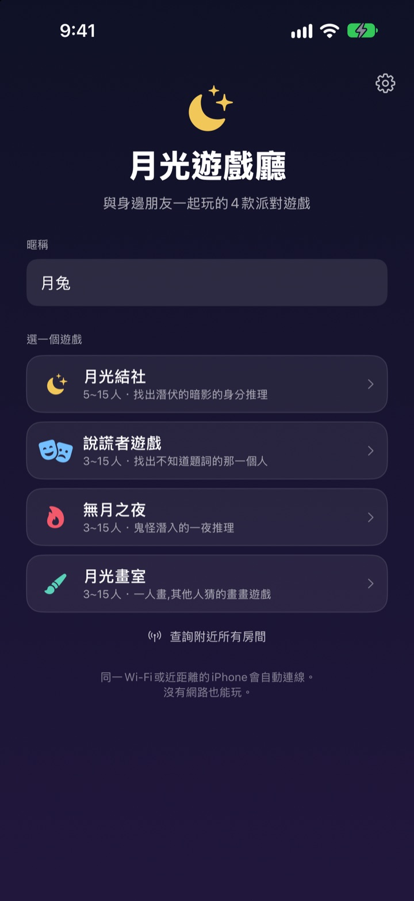
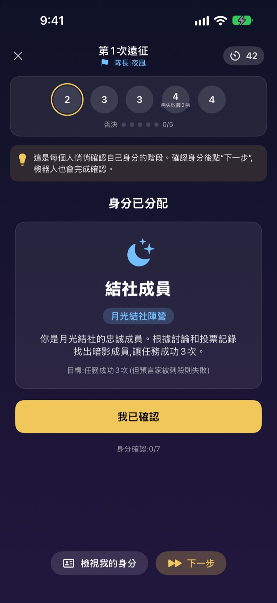
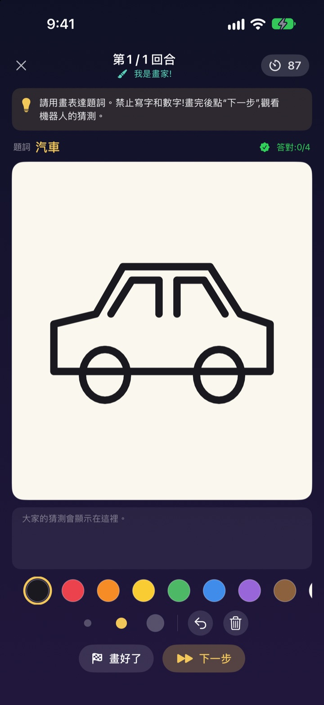
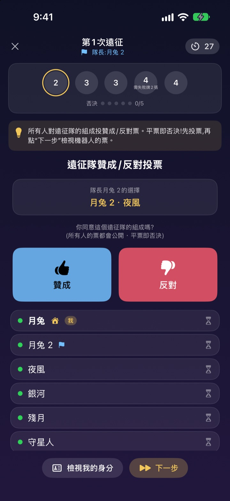

人一到齊，
各拿各的 iPhone
一個人建立房間，附近的人馬上就能加入。身分和題目只出現在自己的螢幕上，不用發牌，也不用有人專門當主持。
所有遊戲免費，不需要帳號，也不需要網路。

體驗一局說謊者遊戲
想像桌上擺著五支 iPhone，一支一支點開看看。只有一個人不知道題目。也可以和朋友輪流傳著螢幕玩。
人都到了，卻不知道要玩什麼
迎新宿營、聚餐續攤、過年家族聚會。玩狼人殺得有人退出來當主持，紙條摺了還是看得到。民宿 Wi‑Fi 一差，連線遊戲也玩不了。月光遊戲廳讓 iPhone 負責主持、發身分和連線。
身分和題目只在你的螢幕上
遊戲一開始，每支 iPhone 會各自收到身分或題目。不用發牌，也不用大家一起閉眼。
投票時只看得到誰投完了，投給誰在公布前都是祕密。

四款遊戲，什麼場合都適合
比口才的說謊者遊戲，靠遠征和投票找出暗影的月光結社，一夜之間揪出鬼怪的無月之夜，一人畫大家猜的月光畫室。
月光結社 5 人起，其他遊戲 3 人起，都最多 15 人。

沒玩過的遊戲也能馬上上手
每款遊戲都有玩法模式，和機器人一起一步步實際玩一遍就能學會規則。看著畫面上方的提示按「下一步」就好。
就算 App 被關掉或連線中斷，在主畫面按「繼續遊戲」就能回到剛剛那一局。

三步驟開始
- 1
選暱稱和遊戲
大家打開 App，填好暱稱，選要玩的遊戲。
- 2
建立或加入房間
一個人建立房間，其他人從「查詢附近房間」加入。
- 3
房主開始
人到齊後房主按「開始遊戲」，接下來交給 App。
四款遊戲
- 說謊者遊戲 · 3–15 人
- 除了一個人，大家拿到同一個題目。輪流用一句話描述，再投票找出說謊者。被抓到的說謊者如果猜中題目，就能逆轉勝。
- 月光結社 · 5–15 人
- 在結社成員中找出潛伏暗影的身分推理遊戲。隊長挑選遠征隊，全員投票贊成或反對，遠征隊再暗中出成功或失敗。哪邊先拿下三次遠征，哪邊就贏。
- 無月之夜 · 3–15 人
- 鬼怪混進村子的一夜。夜裡巫師、夜賊和搗蛋鬼各自暗中行動，天亮後討論，只有一次投票機會找出鬼怪。
- 月光畫室 · 3–15 人
- 一個人把題目畫出來，其他人在聊天裡猜。猜得越快分數越高，猜中的人越多，畫的人也得分越多。
每款遊戲都可以先在玩法模式裡一個人和機器人試玩。
常見問題
附近找不到房間。
請確認房主和玩家連在同一個 Wi‑Fi，或彼此距離夠近。需要在「設定」▸「隱私權與安全性」▸「本機網路」中開啟月光遊戲廳，才能找到附近的裝置。Wi‑Fi 和藍牙都開啟時連線最穩定。
一定要允許取用本機網路嗎？
是的，App 要靠它找到並連上附近的 iPhone。如果不小心拒絕了，可以到「設定」▸「隱私權與安全性」▸「本機網路」重新開啟。
遊戲中途斷線了。
重新打開 App，在主畫面按「繼續遊戲」，就能回到同一個房間、同一局。身分和分數都還在。如果一直連不回來，請從房間列表重新加入。
有人沒反應，遊戲卡住了。
房主隨時可以把沒反應的玩家移出房間，遊戲會依剩下的人數重新判定並繼續。GM 主持人模式還能跳過卡住的階段。
最少要幾個人？
月光結社 5 人，說謊者遊戲、無月之夜和月光畫室 3 人就能開始，都最多 15 人。人不夠的話，可以先在玩法模式和機器人熟悉規則。
需要網路或帳號嗎？
不需要。不用註冊、登入或連網，附近的 iPhone 直接相連就能玩。遊戲資料不會傳送到伺服器。
可以先一個人試試看嗎？
可以。選好遊戲後按「玩法(與機器人練習)」，機器人會進入房間，陪你一步步玩完一整局。
想回報問題或提供建議？
可以在 App 的設定(齒輪)▸ 支援直接傳送，或寄信到下方信箱。我們會盡快回覆。
問題回報、建議或其他詢問，請寄信到 mizzking75@gmail.com。